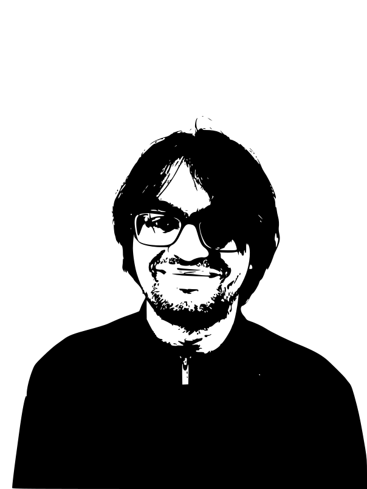

Who I am: MS ECE student at Boston University. Previously EE+CS graduate from COEP (2022).What I do: I study STEVEs in the Semeter Lab under Joshua Semeter. Specifically, I process atmospheric signals and investigate lower ionospheric plasma changes during a STEVE event.
Contact Me: kshitijd[at]bu.edu
Also interested in: MGH simulations of large-scale structures in the universe
To get the source code for this website template, click on the hexagon at the bottom right of the page!
-
A software toolkit to analyze STEVEMy MS thesis topic. While groups across the world have put forward theories regarding STEVE, no one has taken a look at unified radar and satellite data. This is primarily because 1. we don't know when a STEVE is going to occur and 2. citizen science images are unstructured and the STEVEs in them need to be mapped to atmospheric images. Having a toolkit that can essentially grab a STEVE from an image, project it onto a world map, and display atmospheric data at the estimated time of the STEVE would be immensely helpful. In a broader sense, having a way to unify atmospheric data streams would be immensely helpful.
-
Navigation and Infrastructure ThrustThis is part of a research proposal for one of NASA's Mars Mission initiatives that is being worked on at BU. Specifically, I design software to conduct RF propagation experiments through the Martian ionosphere, focusing on the Mars Climate Model database.
Selected Personal and Miscellaneous Projects
-
Optimizing Solar Panel Tilt with Machine LearningPresented at the international GPECOM-21 conference. I was inspired to do this project when the EE department at COEP was installing new solar panels. What tilt angle would result in the greatest generated power? Based on time-series prediction (SARIMAX) and weather coefficients, we optimize the tilt angle for the parking lot installation at the NIST at Gaithersburg, and compare the output with theoretical results predicted by the SMARTS2 radiative transfer model.
-
Radio Telescope DesignMy senior year project. I designed and built a horn antenna to record signals from the galactic center, mentoring about 10 undergraduates along the way.
-
Classifying galaxies with machine learningThis is part of my work with Professor Gopal Bhatta at the University of Zielona Góra, Poland. We are attempting to improve upon state-of-the-art machine learning models for classifying galaxies. So far, we have implemented transformers with the self-attention mechanism on the Galaxy10 dataset and achieved an 89% classification accuracy.
-
BeatQraftA beat generator, powered by state-of-the-art quantum computing. This project won second place at MIT's iQuHACK-23 quantum computing hackathon. Using quantum circuit Born machines, we designed and implemented a music generator trained on 96 different beats and used it to generate new beats. At scale, QCBMs can provably outperform classical machine learning algorithms, and this is a perfect use case for the Covalent quantum computing framework. Implemented using Qiskit, Covalent, and the IBM Oslo quantum computer.
-
Binary star analysisThe binary star system QX Cas is interesting because it has stopped eclipsing and started up again, one of only two known so far to do so. Why does this happen? A project I've worked on on-and-off over the past three years with other collaborators. The leading theory is that there is a large dim object of about a million solar masses directly behind the star system that is causing this phenomenon, a stunning example of a Kozai cycle.
Fall 2022
Spring 2023
Fall 2023
A list of my publications
- S. Kulkarni*, K. Duraphe*, L. Chandwani, S. Jaiswal, S. Kakade, and R. Kulkarni, "Optimizing Solar Panel Tilt Using Machine Learning Techniques," 2021 3rd Global Power, Energy and Communication Conference (GPECOM), Antalya, Turkey, 2021, pp. 190-195, doi: 10.1109/GPECOM52585.2021.9587892.
* Co-first author, Equal contribution
Student Clubs
I was involved with quite a few student clubs during my time at COEP. Here the two I contributed the most to.
COEP Astronomy Club
I was involved with the Astronomy Club at COEP during all four years of my undergraduate program. Eventually, I held a figurehead position as the Projects Head - I'll let the reader decide what that means to them - and did a lot of interesting stuff. We designed two antennas - a horn radio telescope, and a Yagi-Uda antenna (this was for 50MHz emissions), worked on the SKAO SDC2 data challenge, and won third place for our lunar habitat design project at the SEDS-India hackathon.
COEP Abhiyanta
Check out some of the articles I wrote for COEP's Abhiyanta magazine here!
My latest resume should be visible below this page. If you can't see the resume, it is available here.
STEVE
Anticipation
Get in touch!
kshitijd[at]bu.edu
Physical
Please address it to
Space Physics Lab, PHO 539, Photonics Center, 8 Saint Mary's Street, Boston, MA, 02215